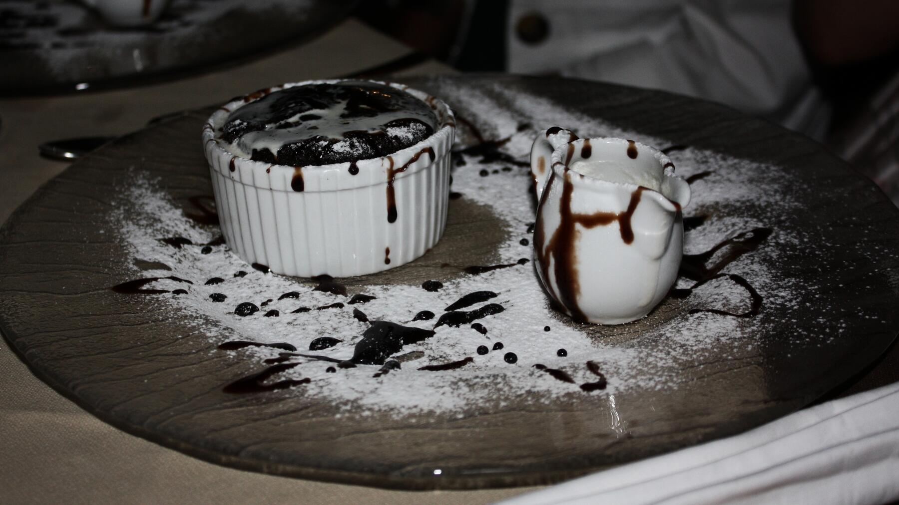

Zurück zur Übersicht
Heißes Schokoladen-Soufflé
Luftig aufgegangenes Schokoladen-Soufflé aus dem Ofen, mit Puderzucker und warmer Schokoladencreme serviert.
- Zeit
- 1 Std. 10 Min.
- Schwierigkeit
- mittel
- Kategorie
- Nachtisch
- Ernährung
- vegetarisch
Zutaten
Portionen
Soufflé
- 100 gZartbitterschokolade
- 300 mlMilch
- 25 gButter
- 4große Eier, getrennt
- 1 ELSpeisestärke
- 50 gZucker
- 3 TropfenVanillearoma (2–3 Tropfen)
- 100 gZartbitterschokolade, geraspelt
- Butter und Zucker für die Form
- Puderzucker
Creme
- 2 ELSpeisestärke
- 1 ELZucker
- 450 mlMilch
- 50 gZartbitterschokolade
Zubereitung
- Eine Soufflé-Form (850 ml) einfetten und mit Zucker ausstreuen.
- Milch und Butter in einem Topf zum Köcheln bringen.
- Eigelb, Speisestärke und Zucker mischen, etwas heiße Milch zugießen und kräftig schlagen. In den Topf gießen und unter Rühren eindicken lassen.
- Die Schokolade in Stücken zugeben und schmelzen. Vom Herd nehmen und das Vanillearoma unterrühren.
- Das Eiweiß zu Schnee schlagen. Die Hälfte unter die Schokoladenmasse heben, die andere Hälfte mit den Schokoraspeln mischen und ebenfalls unterheben.
- In die Form füllen und im Ofen bei 180 °C 40–45 Minuten backen, bis das Soufflé aufgegangen ist.
- Für die Creme Speisestärke und Zucker mit etwas Milch glatt rühren. Die restliche Milch aufkochen, die angerührte Stärke hineingeben und die Schokolade darin schmelzen.
- Das Soufflé mit Puderzucker bestäuben und mit der Creme servieren.